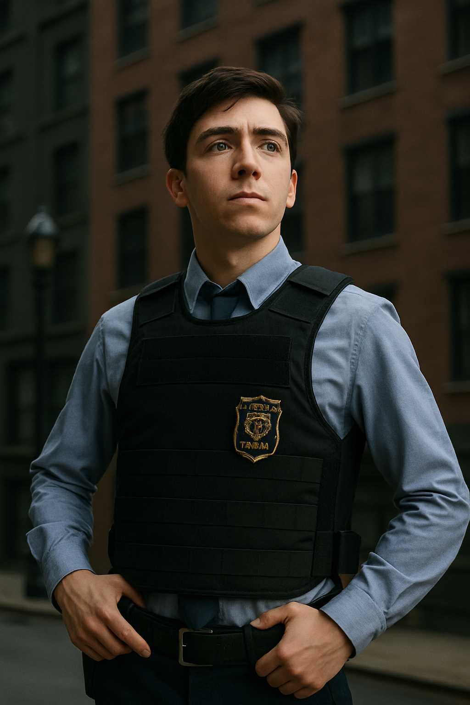

Brookling 99
Brookling 99 es una comedia de situación estadounidense creada por Dan Goor y Michael Schur. La serie sigue las aventuras del equipo de detectives de la comisaría 99 de Brooklyn, Nueva York, mientras resuelven crímenes y navegan por sus relaciones personales y profesionales. Con un elenco diverso y talentoso, la serie combina humor, dramas y momentos conmovedores, convirtiéndose en un clásico de la televisión moderna.
